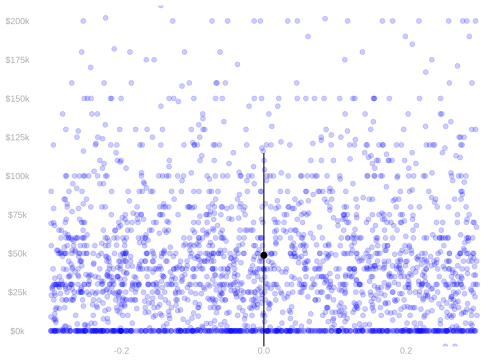

20 Probability Review
A New Dataset
$$ \newcommand{X}{} \newcommand{Y}{}
$$

| income | education | county | |
|---|---|---|---|
| 1 | $266k | 16 | LA |
| 2 | $51k | 13 | san joaquin |
| 3 | $0k | 16 | orange |
| 4 | $53k | 20 | san diego |
| ⋮ | NA | NA | NA |
| 2271 | $45k | 16 | LA |
Sample locations (made up)
We’ll do the same thing we’ve been doing, but for non-binary outcomes. Using data from the Current Population Survey, we’ll estimate the mean income in our population. Our population will be the set of California residents between the ages of 25 and 35 with at least an 8th-grade education.1
Imagining a Population


We don’t have much information about the people in our population—except the ones in our sample. But, for the sake of visualization, I’ve made some up. We’ll put visualizations of this fake population on the left and visualizations of the (real) sample on the right.
We’ll act as if our data were sampled, with replacement, from this population. Our working assumption: each dot on the right was chosen, from those on the left, by rolling a big die. That’s not quite right, but we’ll stick with it throughout the semester.
Sample and Population Means


One thing we often want to estimate is the mean of our population, \[ \mu = \frac{1}{m}\sum_{j=1}^m y_j. \] We’ll think of the mean in our sample as an estimate of it, \[ \hat \mu = \frac{1}{n}\sum_{i=1}^n Y_i. \]
We have shown last time that this estimator is unbiased, \[ \mathop{\mathrm{E}}[\hat \mu] = \mu \qfor \underset{\text{\color{\] And we have almost calculated its standard deviation. Here it is, \[ \mathop{\mathrm{sd}}[\hat \mu] = \frac{\sigma}{\sqrt{n}} \qfor \underset{\text{\color{\] We did it in the special case of binary \(Y_i\) in our last lecture. We’ll generalize next time. It’s a one-line change.
Why Do We Care About Unbiasedness?


Unbiasedness means that our sampling distribution is centered at our estimation target. On the left, we see the sampling distribution of an unbiased estimator. When it looks like that, we’re in good shape. On the right, we see one for an estimator with substantial bias. When it looks like that, we’re in trouble. You can see that a good number of our samples on the right are far off-target—further away than the width of the distribution. You can see this might cause problems with coverage.
If we calibrate interval estimates to cover the estimator’s mean 95% of the time, how often will they cover the thing we actually intend to estimate? Give me a rough estimate for the picture on the right. Is it about 90%? 80%? 50%? 20%? We’ll see our first examples of biased estimators in this week’s homework. And we’ll have to start thinking about this relationship between bias and coverage.
Random Variables
A lot of this is review.
Observations as Random Variables
The notation \(y_j\) refers to a number. It’s the income of the \(j\)th person in our population. That’s just some person. The notation \(Y_i\) refers to something else. It’s the income of the \(i\)th person we call in our survey. That’s not a person. That’s the result of a random process—the roll of a die. To summarize this result, we talk about the probability distribution of \(Y_i\).
Probability Distributions
When our outcomes are binary, it’s easy to describe this distribution. All we need to know is the probability that \(Y_i\) is 1. To do that, we sum the probabilities of the rolls that result in it being one, \[ P(Y_i = 1) = \sum_{j: y_j = 1} P(\text{roll}_i = j) = \sum_{j: y_j = 1} \frac{1}{m} \times y_j = \mu. \] This collapses out information about our random process that’s irrelevant to \(Y_i\). That is, it collapses the probability we roll each number in 1…m into our ‘weighted coin flip’.
When our outcomes are nonbinary, it’s a bit more complicated. We need to know the probability that \(Y_i\) takes on each possible value. But we calculate it the same way—we sum the probabilities of the rolls that result in it taking on those values, \[ P(Y_i = y) = \sum_{j: y_j = y} P(\text{roll}_i = j). \] We’re still collapsing out irrelevant information, but what we’re left with is more complicated. It’s a weighted die roll, with one face for each possible value of \(Y_i\). And if each person’s income is different, then there’s nothing to collapse out, \[ P(Y_i = y) = \begin{cases} \frac{1}{m} & \qqtext{for} y \in y_1 \ldots y_m \\ 0 & \qqtext{otherwise} \end{cases} \]
Expectations
That said, we often don’t need to know the whole distribution. Often the only thing we care about is the expected value of \(Y_i\). Or some related quantity. The expected value of \(Y_i\) is the probability-weighted average of the values it can take on. What’s nice about this is that we can think of this in ‘uncollapsed’ terms. When we sample as usual, this is just the population mean. The collapsed form is, in a sense, just summing in a different order, \[ \begin{aligned} \mathop{\mathrm{E}}[Y_i] = \sum_y P(Y_i = y) \times y = \sum_y \p*{\sum_{j: y_j = y} \frac{1}{m}} \times y = \frac{1}{m}\sum_y\sum_{j:y_j = y} y = \frac{1}{m}\sum_{j=1}^m y_j. \end{aligned} \]
What’s nice about the binary case is, in fact, that it’s an expectation. When \(Y_i\) is binary, the probability it’s 1 is its expected value \(Y_i\), \[ \begin{aligned} P(Y_i=1) = \sum_{j: y_j = 1} P(\text{roll}_i = j) &= \sum_{j:y_j=1} \frac{1}{m} \\ &= \sum_{j=1}^m \frac{1}{m} \times \begin{cases} 1 & \ \ \text{ if } y_j = 1 \\ 0 & \ \ \text{ otherwise} \\ \end{cases} \\ &= \sum_{j=1}^m \frac{1}{m} \times y_j = \mathop{\mathrm{E}}[Y_i]. \end{aligned} \] In fact, we like expectations so much that we often use them to work with probabilities, \[ P(Z \in A) = \mathop{\mathrm{E}}[1_A(Z)] \qfor 1_A(z) = \begin{cases} 1 & \qqtext{ for } z \in A \\ 0 & \qqtext{ otherwise} \end{cases} \]
Population Means and Variances as Expectations
- If a random variable \(Y\) is equally likely to be any member of a population \(y_1 \ldots y_m\), …
- … then its expectation is the population mean \(\mu=\frac{1}{m}\sum_{j=1}^m y_j\).
- … and its variance is the population variance \(\sigma^2 = \frac{1}{m}\sum_{j=1}^m (y_j - \mu)^2\).
- Terminology. When each of our observations \(Y_i\) is like this, we’re sampling uniformly-at-random.
\[ \begin{aligned} \mathop{\mathrm{E}}[Y] &= \sum_{j=1}^m \underset{\text{response}}{y_j} \times \underset{\text{probability}}{\frac{1}{m}} = \frac{1}{m}\sum_{j=1}^m y_j = \mu \\ \mathop{\mathrm{E}}[(Y-\mathop{\mathrm{E}}[Y])^2] &= \sum_{j=1}^m \underset{\text{deviation}^2}{(y_j - \mu)^2} \times \underset{\text{probability}}{\frac{1}{m}} = \frac{1}{m}\sum_{j=1}^m (y_j - \mu)^2 = \sigma^2 \end{aligned} \]
Independence
Random variables are independent if, in intuitive terms, knowing the value of one doesn’t tell us anything about the value of the other. In mathematical terms, their joint probability distribution is the product of their individual marginal ones, \[ P(Y_1 ... Y_k = y_1 \ldots y_k) = P(Y_1=y_1) \times \ldots \times P(Y_k=y_k). \] That’s what happens when the randomness in each \(Y_i\) comes from a different roll of the die. And since that’s how we’re doing our sampling in the Current Population Survey, it’ll be true in our sample. Because we draw each of our observations the same way, they also have the same probability distribution. We say they’re independent and identically distributed. At least, that’s what we’re pretending when we analyze CPS data in this class. Reality is more complicated.
Working with Expectations
Linearity of Expectations
\[ \begin{aligned} E ( a Y + b Z ) &= E (aY) + E (bZ) \\ &= aE(Y) + bE(Z) \\ & \text{ for random variables $Y, Z$ and numbers $a,b$ } \end{aligned} \]
There are two things going on here. To average a sum of two things, we can take two averages and sum. To average a constant times a random variable, we multiply the random variable’s average by the constant. In other words, we can distribute expectations and can pull constants out of them.
Unbiasedness of the Sample Mean
The Sample Mean
Claim. The sample mean is an unbiased estimator of the population mean. \[ \mathop{\mathrm{E}}[\hat\mu] = \mu \]
\[ \begin{aligned} \mathop{\mathrm{E}}\sb*{\frac1n\sum_{i=1}^n Y_i} &= \frac1n\sum_{i=1}^n \mathop{\mathrm{E}}[Y_i] && \text{ via linearity } \\ &= \frac1n\sum_{i=1}^n \mu && \text{ via equal-probability sampling } \\ &= \frac1n \times n \times \mu = \mu. \end{aligned} \]
The sample mean is an unbiased estimator of the population mean. Now that we’ve worked out that the location is good, it’s time to talk about spread. That’s what we’ll do next time.
The locations shown on the map are made up. They’re not the actual locations of the people in the sample. The survey includes some location information for some people, but as you can see in the table, not for everyone.↩︎